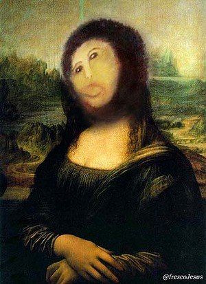
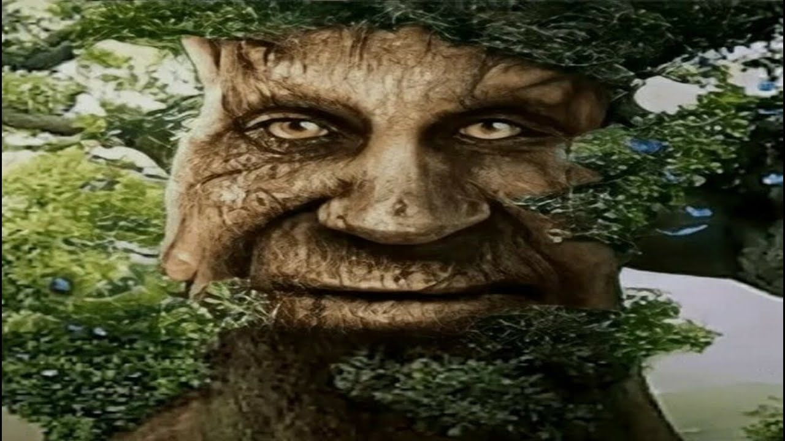
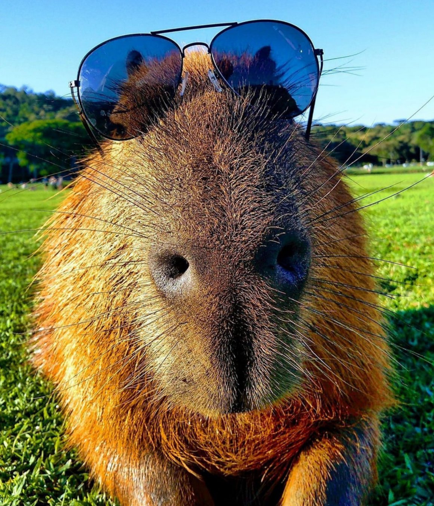

Мама
Я уверен, моя мама — самая лучшая! Она любит меня таким, какой я есть, всегда поймёт и успокоит. Её изумрудные глаза иногда бывают грустными и уставшими, но неизменно излучают тепло. Она радуется моим победам и переживает, если в моей жизни происходят неудачи. Я знаю, что всегда могу рассчитывать на мамину помощь в трудную минуту. Мама рядом, когда я болею, когда плачу и смеюсь… Она с одного взгляда поймёт мое настроение и почувствует тревогу на душе.
Подсказка: Не пытаться спорить

Папа
Мой папа очень хороший. Он любит и балует меня. Он дарит мне подарки, чаще всего это какие-нибудь сладости. Мне нравится, когда он играет со мной. Самое обидное для меня, это когда он обижается на меня и не разговаривает. Тогда я чувствую себя виноватым и прошу прощения. Конечно, папа меня всегда прощает и снова на его лице появляется очаровательная улыбка.
Подсказка: Если начачлся спор, то скоро появится и мама

Денис
С самого детства мы с братом спим в одной комнате, когда ты маленький, тебя это жутко раздражает, так как нужно делиться с ним всеми своими игрушками и порой даже одеждой, которая становится тебе мала. Конечно же, сейчас смотря со своих лет назад, понимаешь, что драка из-за какой – нибудь вещицы бессмысленно и это всего лишь детская шалость.
Подсказка: Нельзя делать что-то плохое, если дома есть мама
Дима
Для меня мой брат – это друг, пусть я не всё могу ему доверить, но я точно знаю, что он мне всегда поможет и выручит. У нас с ним разные компании и друзья но всё равно у нас много общего. Например, у нас есть шутки и фразы, которые понимаем только мы и никто больше. Мне кажется, такое может быть только у близких людей.
Подсказка: Всегда выполнять обещания, иначе тебе капец
Данил (Я)
Я среднего роста, у меня тёмно-русые волосы, и карие глаза. В свободное время от школы я играю или занимаюсь на компьютере.
Подсказка: Почаще покапать вкусненькое